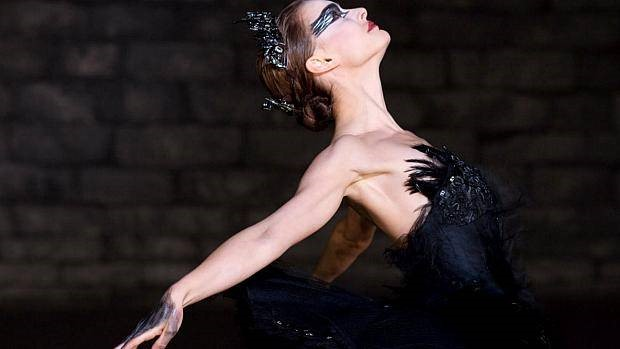

A dança e sua contribuição à Saúde Pública.
Não é novidade para ninguém que a dança é um ótimo “prato” a ser servido para quem busca uma saúde mais equilibrada de uma forma alternativa, descontraída e alto astral. E também Para quem acha um tédio fazer sempre a mesma sequência de exercícios nos aparelhos da academia. Seja dança de salão, sapateado, jazz, balé, e até mesmo dança de rua… Você está por dentro de todos os benefícios que essa modalidade possui? listaremos aqui os principais motivos pelos quais você não pode perder seu tempo e matricular-se agora em uma escola de dança!
Perder peso e tonificar o corpo!
Se o seu objetivo é perder peso e ter um corpo definido, a dança é um ótimo aliado. Em algumas modalidades você pode gastar até 700kcal/hora e dentro de alguns meses você já poderá notar algumas diferenças incríveis no seu corpo!
Ajuda a reduzir o estresse e a ansiedade.
Um dos benefícios do exercício é reduzir a tensão e relaxar os músculos. Além disso, a dança pode estimular a concentração, acalmar e relaxar, além de reduzir a ansiedade acumulada durante o dia. Isso é bom para o corpo e a alma!
Melhora a autoestima.
Para que busca uma definição do corpo, quando elas começam aparecer, Os alunos ficam mais confiantes com as mudanças físicas e podem até se expressar melhor.
Combate a depressão.
A dança tem a capacidade de conectar corpo, mente e espírito. Além dos benefícios físicos, também traz paz interior e muda muito as emoções, colocando os sentimentos para fora.
Aumenta a capacidade sanguínea.
Por exemplo, certas formas de dança aumentam a frequência cardíaca equivalente à categoria de exercícios aeróbicos. Eles também estimulam a circulação sanguínea e melhoram a capacidade respiratória.
Ajuda a fazer novos amigos e socializar.
Além de fazer novos amigos, a prática de exercícios em grupo também pode ajudar a todos se socializar e pensar juntos, o que é sempre bem-vindo.
Você pode seguir carreira artística!
Outra vantagem que a dança faz é que além de melhorar sua saúde, você pode aprimorar-se e ainda seguir carreira como bailarino, coreógrafo ou professor!
Agora que já listamos os principais benefícios que a dança traz, duvido que você vai querer ficar de fora dessa! Agora é só colocar uma roupa bem leve e correr para se exercitar!
Aluno(a): Marcílio Aguiar